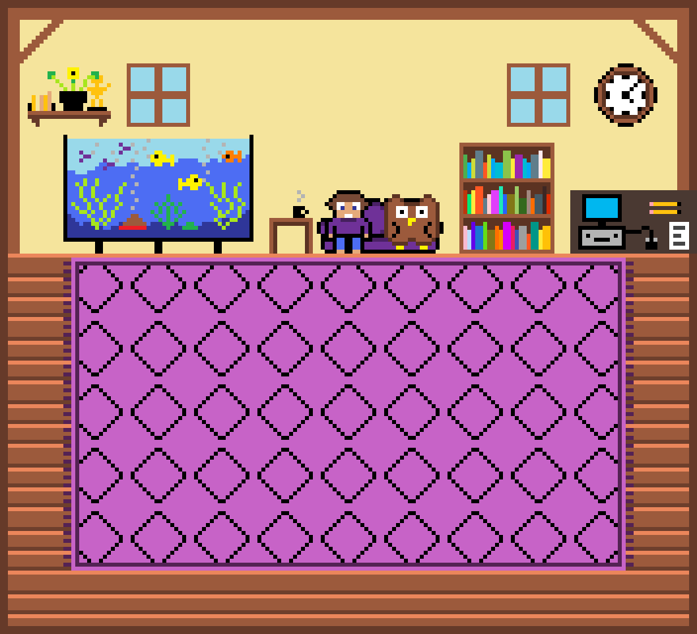

Evan Walker Portfolio
Born in Owen Sound, Ontario in 1991; I spent the first year of my life toiling on a farm before we packed up and moved to the big city (Toronto) for work. At the age of 3 I became an assistant winemaker to my Dad who I am sure found me very helpful.
As time went on I decided to get older, eventually finding myself thriving in the Electro-mechanical Engineering Technician course at George Brown College. I picked up how to program PLCs and Arduino microcontrollers and the basics of electric and hydraulic circuits quickly and discovered a passion for technology and coding I was previously unaware of. As much as I loved that whole course the physics class stood out as uniquely exciting, so after I graduated I went back to high school to improve my grades then enrolled in the University of Toronto, where I earned a Physics Specialist Degree.
While at university I built on my coding skills by analyzing lab results with Python and VPython scripts, and curiousity drove me to learn R for data science and C and C++ to better understand the software development process. Labs were also a perfect environment to build testing skills as all hardware and software required troubleshooting and testing solutions before any results could be recorded.
After University I attended BrainStation and earned certificates in Data Analysis and Data Science. The final project for the Data Analysis course is the Alien PowerPoint and the Pokemon project is the final project for the Data Science course, both found in the Data Science room. I also completed the Dataquest data science learning path and several of the freeCodeCamp courses to learn front-end and back-end development.
My QA career started at PLATO, and I will always be grateful to them for taking on a completely inexperienced software tester back in 2022 and giving me room to learn and thrive with my new skill set. In my 4+ years I have had the privilege of working as a Lead Functional Tester while leading three interns through a full accessibility audit of a client's website, a Subject Matter Expert for accessibility testing, and a QA Automation Engineer. I have also developed an accessibility-focused web application using HTML, CSS and JavaScript designed to test beginner accessibility testers and worked with a Front-End Engineer to fix defects in WordPress using third-party tools and custom JavaScript. Now I am looking to continue my career growth in QA Automation and SDET roles that allow me to leverage both my testing and development skills.
I also play keyboards and designed/manage my band's website thedetweilers.com
Thank you for reading!